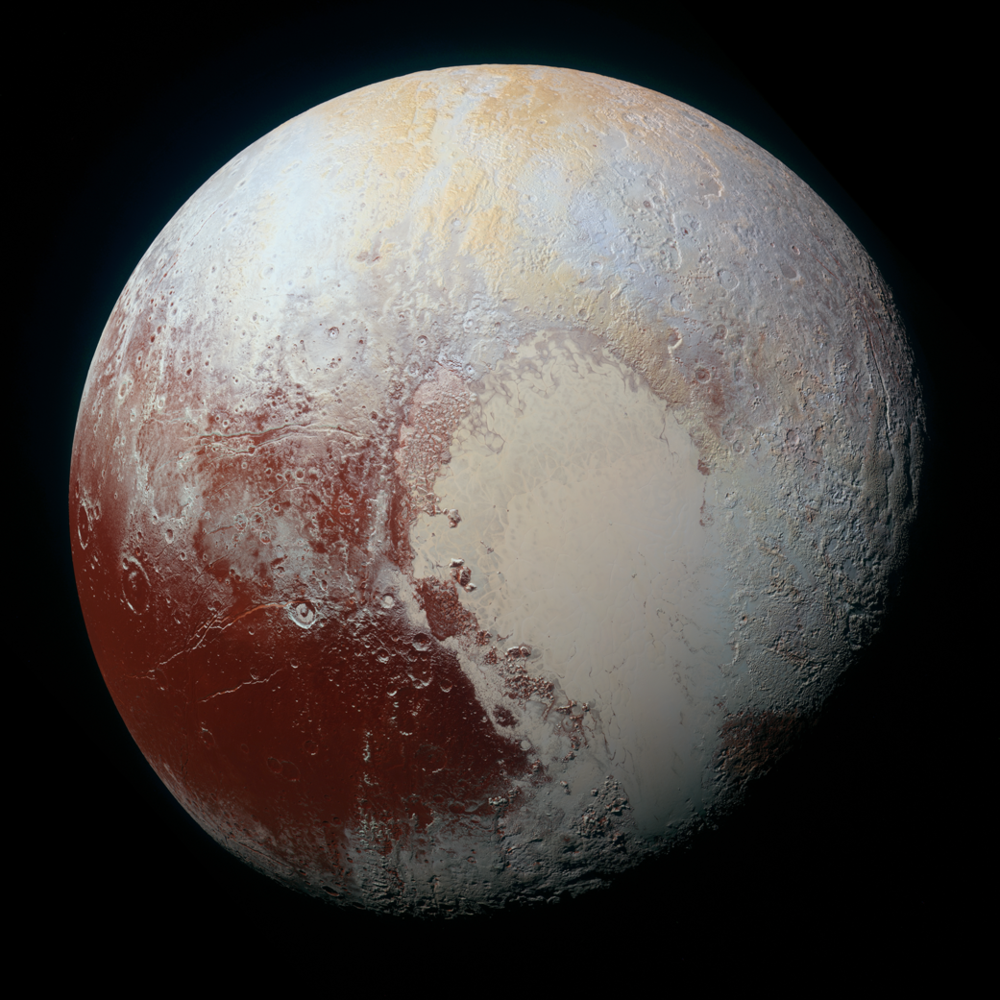

PLUTÓN

Hoy clasificado como planeta enano, aunque durante muchos años fue considerado el noveno planeta.
Es pequeño y helado, con una órbita muy excéntrica. Su superficie está compuesta de hielo y roca, y posee una luna llamada Caronte, casi de su mismo tamaño.